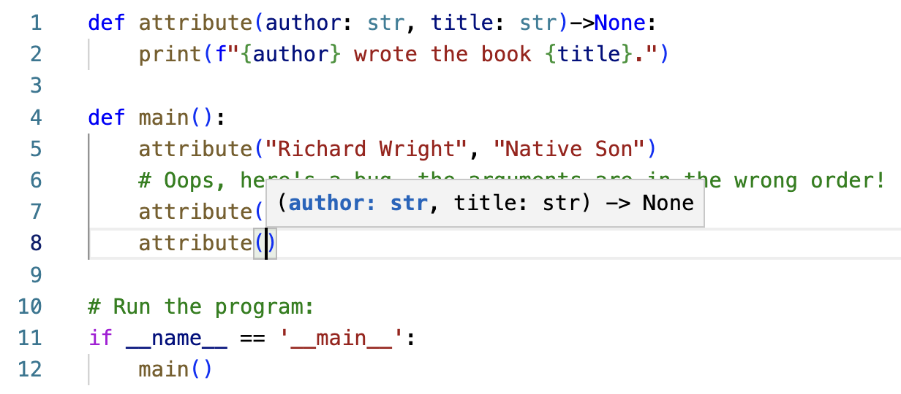

What is this book?
This is the on-line textbook used at the University of Denver for the second-quarter Introduction to Programming 2 course (COMP 1352). This course is a continuation of the preceding quarter (Introduction to Programming 1, COMP 1351). This book is written to teach programming in python, and relies on dudraw, a simple in-house graphics package that extends Princeton's stddraw. Instructions on software installation can be found in the on-line textbook for COMP 1351, which you can find at Introduction to Programming 1.
Lists and Dictionaries
Review of python lists
A python list is a built-in data structure that holds an ordered collection of values. Python lists are mutable (the contents can be modified after creation), and can store any data type (including lists, making a nested list).
Creating new lists
There are several ways to create new lists:
- List literals: write the comma-separated contents within square brackets, storing the list in a variable:
# contents of lists can be any type
greek_letters = ['alpha', 'beta', 'gamma', 'delta']
some_primes = [385351, 217739, 854123, 769733, 898091]
# lists can be nested
scores = [[94, 78, 56], [67, 82, 91]]
- Create an empty list, then append elements within a loop:
ten_odds = []
for i in range(10):
ten_odds.append(2*i+1)
# get input from user, appending each entry into list:
friends = []
num_friends = int(input("How many friends? "))
for i in range(num_friends):
friend_name = input("Enter a name: ")
friends.append(friend_name)
print(friends)
- Use python's built-in
list()function (called a 'constructor'). Pass any existing iterable (list, range object, tuple, string, dictionary) as the parameter, and a new list will be created using its data.
greek_letters = ['alpha', 'beta', 'gamma', 'delta']
# create a new list, a copy of an existing list
copy_letters = list(greek_letters)
# changing the copied list does not affect the original
copy_letters.append('epsilon')
print(copy_letters) # alpha through epsilon
print(greek_letters) # still just alpha through delta
# create a list of the individual characters in a string
letters = list('haleakala')
# create a list from the elements in a range object
values = list(range(1, 10))
# create a dictionary literal:
numbers = {1: 'one', 2: 'two', 3: 'three'}
# create a list of the keys from an existing dictionary:
nums = list(numbers.keys())
# create a list of the values from an existing dictionary:
num_names = list(numbers.values())
# create a list of the (key, value) tuple pairs from an existing dictionary:
num_items = list(numbers.items())
Accessing elements in a list
You can access (view or change) each element in a list using its index value
(the number of its location in the list) within square brackets. For example, list_name[n].
Elements in a list are indexed starting at 0, so list_name[0] gives the value of the first element of the list,
and list_name[n] gives the value of the n+1st element in the list.
You can find out the number of elements in a python list with len(list_name).
So the value of the last element of a list is list_name[len(list_name)-1].
Alternately, in python, you can use an index of -1 for the last element of a list, so list_name[-1] is the value of the last element.
(Note that using an index value of -1 is not part of Java or C++, and will result in an index out of bounds error)
languages = ["C++", "python", "Java", "Perl", "JavaScript", "R", "Go", "Rust", "Haskell", "Perl"]
# Access the first element in a list with an index value of 0
print(f"I can program in {languages[0]}")
# Access the last element in a list with an index value of len(languages)-1 or -1:
print(f"I can program in {languages[len(languages)-1]}")
print(f"I can program in {languages[-1]}")
# Lists are mutable, so you can modify the value of an element in the list using its index:
languages[0] = "C#"
Removing elements from a list
There are multiple ways to remove an element from a list in python. Here are two ways:
- Use the
remove()list method. The parameter you pass is the value you want to remove. So theremove()method traverses through the list until it reaches the first instance of the value. That value is then removed from the list. Details: this method does not return a value. If the value you want to return is not found in the list, python throws aValueError.
# Remove the first instance of "Perl" from the list
languages.remove("Perl")
- Use the
pop()list method. The parameter you pass is the index you want to remove. Details: thepop()method returns the value of the element it removed. If the index you pass as a parameter is invalid, python throws anIndexError.
# Remove the index 1 element (2nd element) from the list
removed = languages.pop(1)
print(removed)
- Use the
delkeyword to remove an element at a specific index. Details: the value stored at that index is not returned. If the index is invalid, python throws anIndexError.
# Remove the index 0 element (first element) from the list
del languages[0]
Traversing lists
you can traverse lists three different ways:
- you can use an index (index-based traversal), or
- you can traverse directly through the values of the list (content-based traversal), or
- you can traverse using
enumerate(), which tracks both index and content.
Example showing three techniques for traversing a list:
# index-based traversal through list:
# Here, i iterates over all indexes in the list (0 through len(languages)-1)
for i in range(len(languages)):
print(f"I can program in {languages[i]}")
# content-based traversal through list:
# Here, language iterates over all values stored in the list
for language in languages:
print(f"I can program in {language}")
# traversal through list using enumerate()
# (allows you to track index and value simultaneously)
# Here, one variable (i) holds the index and another (language) holds the value
for i, language in enumerate(languages):
# Separate the phrases with commas
if i != len(languages) - 1:
print(f"I love {language}", end = ', ')
# when you get to the last language, end sentence with an exclamation point
else:
print(f"I love {language}!")
Note that above in the use of enumerate(), we access the value with the variable language.
But instead, since the index is available, we could have used languages[i].
The in keyword
You can use the in keyword to determine if a value exists anywhere in the list. It returns a True/False result.
if "Java" in languages:
print("Java is in the list")
List methods
There is a long list of methods you can use to help you manipulate lists. Please see Official python documentation on lists
Review of python dictionaries
A python dictionary is a built-in data structure that holds (key, value) pairs (the key/value pairs are called items). The purpose of a dictionary is to store these pairs so it is very efficient to look up the value given the key. Python dictionaries are mutable (the contents may be modified after creation). The keys must be of an immutable type, while the values can may be any data type (including dictionaries and lists, making for a nested data structure).
Creating new dictionaries
There are several ways to create new dictionaries:
- Dictionary literals: Each key and value is separated with a colon, while the key:value pairs are separated by commas. Then the comma-separated pairs are placed within a pair of curly braces:
# dictionary literal for looking up state capitals:
state_capitals = {
"Alabama": "Montgomery",
"Alaska": "Juneau",
"Arizona": "Phoenix",
"Arkansas": "Little Rock",
"California": "Sacramento",
"Colorado": "Denver",
# etc...
}
- Create an empty dictionary, then append elements within a loop (this strategy is especially useful for building a dictionary from data stored in a file):
student_ids = {}
name = ""
while name != ".":
name = input("Student name? (Enter . to finish) ")
if name != ".":
id = input("Student id? ")
student_ids[name] = id
- Create a dictionary using the
dict()function. This constructor allows you to pass the information in a variety of forms.
# Create a copy of an existing dictionary:
copy_state_capitals = dict(state_capitals)
# Create a dictionary from a list of tuples (each tuple is a key/value pair)
numbers_to_words = dict([(1, 'one'), (2, 'two'), (3, 'three')])
# Create a list of tuples by zipping together two separate lists,
# the first is the list of keys, the second is the matched list of values.
# Then create a dictionary from that zipped list of tuples
numbers_to_words = dict(zip([1, 2, 3], ['one', 'two', 'three']))
The number of items (i.e., the number of key/value pairs), is given by len(dictionary_name).
Looking up values in the dictionary using square brackets or the get() method
Given a key, you can look up the associated value in a dictionary using square brackets.
The keys act much like the index in a list, but they do not have to be integers!
Put the key within square brackets (dictionary_name[key]). This expression gives the value associated with that key.
# Using the state_capitals dictionary defined above, this line outputs "Juneau"
print(state_capitals["Alaska"])
# Using the numbers_to_words dictionary created above:
# find out the user's age, then output it in words
age = int(input("How old are you? "))
print(f"You are {numbers_to_words[age]} years old!")
Sample output:
How old are you? 3
You are three years old!
Alternately, you can look up the value associated with a key using the get() method. Pass the key as a parameter.
age = int(input("How old are you? "))
print(f"You are {numbers_to_words.get(age)} years old!")
# output is identical to the code above
What if the key you're trying to access isn't in the dictionary?
If you try to access a non-existent key in a dictionary, python crashes with a KeyError.
You can address this issue in multiple ways:
- Use the python dictionary
get()method. If the key is not found, it will not crash - instead it returnsNone
state = input("What state's capital do you want to know? ")
print(f"The capital of {state} is {state_capitals.get(state)}.")
Sample output:
What state's capital do you want to know? Minneshota
The capital of Minneshota is None.
- Use the
inkeyword to confirm the key is in the dictionary before accessing it:
state = input("What state's capital do you want to know? ")
if state in state_capitals:
print(f"The capital of {state} is {state_capitals[state]}.")
else:
print(f"{state} is not a valid state.")
Sample output:
What state's capital do you want to know? Minneshota
Minneshota is not a valid state.
- Use a try/except block to catch the
KeyError(covered in a later section).
Modifying elements in a dictionary using square brackets or the update() method
By putting dictionary_name[key] on the left side of an assignment statement,
you can change the value associated with that key (if the key is already in the dictionary),
or create a new item with the given key/value (if the key is not already in the dictionary).
# The key 3 is already in the dictionary, so the next line changes its value
numbers_to_words[3] = 'trois'
# The next line adds a new item into the dictionary, with key 4 and value `four`
numbers_to_words[4] = 'four'
Alternately, you can use the update() method, particularly if multiple new key/value pairs are to be added at once:
# adds two new key value pairs (5, 'five') and (6, 'six') to the numbers_to_words dictionary
numbers_to_words.update({5: 'five', 6: 'six'})
Removing items from a dictionary using the pop() method or the del keyword
Use the pop() method (pass the key as the parameter) to remove a key/value pair from the dictionary.
Detail: pop() returns the value associated with the deleted key. If the key is not in the dictionary, this call will raise a KeyError.
# removes the item ("Alaska", "Juneau") from the state_capitals dictionary
state_capitals.pop("Alaska")
Alternately, you can delete an item from a dictionary using the del keyword. A KeyError is raised if the key is not in the dictionary.
del state_capitals["Alaska"]
List Comprehension
List comprehension is a convenient strategy built into python for creating lists by manipulating existing lists, range objects, or other iterable objects. (Note that list comprehension is not part of Java or C++, but you will see it again in other functional programming languages)
The idea of list comprehension is to include the definition of a loop within the one line that creates the list.
Example 1
Here is some code that creates a list of the first ten positive odd integers:
ten_odds = []
for i in range(10):
ten_odds.append(2*i+1)
Notice that the expression 2*i+1 gives the values to append to the list,
while the code for i in range(10) gives the values to use for the variable i. In list comprehension,
both of these are embedded into the one-line definition of the list. The line below creates
the identical list:
ten_odds = [2*i+1 for i in range(10)]
Generate new lists using any iterable object
The examples below demonstrate that you can use list comprehension to create new lists, by traversing any iterable object.
Example 2
Consider this list:
digits = ['0', '1', '2', '3', '4', '5', '6', '7', '8', '9']
It can be defined more robustly using list comprehension:
digits = [str(i) for i in range(10)]
With practice, you'll use list-comprehension creatively in a wide variety of applications.
Example 3
You can create lists using list comprehension by looping over any iterable object. Here we iterate over an existing list:
primes = [2, 3, 5, 7, 11, 13, 17, 19, 23]
primes_squared = [prime*prime for prime in primes]
For reference, here is the code that accomplishes the same task using a loop:
primes = [2, 3, 5, 7, 11, 13, 17, 19, 23]
primes_squared = []
for prime in primes:
primes_squared.append(prime*prime)
Example 4
You can break a string into a list of its individual characters:
letters = [character for character in 'Hello, World']
# letters = ['H', 'e', 'l', 'l', 'o', ',', ' ', 'W', 'o', 'r', 'l', 'd']
Example 5
You can create a list from an existing dictionary's keys, or values:
us_state_to_abbrev = {
"Alabama": "AL",
"Alaska": "AK",
"Arizona": "AZ",
# etc...
}
# state_names is a list of all of the state names (a list of the keys extracted from us_state_to_abbrev dictionary)
state_names = [state_name for state_name in us_state_to_abbrev.keys()]
# abbreviations is a list of all of the state abbreviations (a list of the values extracted from us_state_to_abbrev dictionary)
abbreviations = [abbrev for abbrev in us_state_to_abbrev.values()]
List Comprehension and conditionals
We've seen list comprehension of the form
new_list = [value for variable in iterable]
Now we'll add a conditional (an if-clause) to restrict some values from being included into the list:
new_list = [value for variable in iterable if conditional_expression]
Example 6
Yet another strategy for producing a list of the first ten odd numbers:
ten_odds = [i for i in range(20) if i%2==1]
Example 7
Extract all of the upper-case letters from an existing string:
letters = [character for character in 'Hello, World' if character.isupper()]
# letters = ['H', 'W']
Example 8
A more involved example, extracting from the state-to-abbreviations dictionary all state abbreviations that start with a vowel.
us_state_to_abbrev = {
"Alabama": "AL",
"Alaska": "AK",
"Arizona": "AZ",
# etc...
}
vowel_abbrev = [abbrev for abbrev in us_state_to_abbrev.values() if abbrev[0].lower() in "aeiou"]
# vowel_abbrev = ['AL', 'AK', 'AZ', 'AR', 'ID', 'IL', 'IN', 'IA', 'OH', 'OK', 'OR', 'UT']
Nested loops in list comprehension
The iteration within a list comprehension can be a nested loop:
digits = ['1', '2', '3']
letters = ['a', 'b', 'c']
new_list1 = [digit + letter for digit in digits for letter in letters]
# new_list1 = ['1a', '1b', '1c', '2a', '2b', '2c', '3a', '3b', '3c']
Note that the nested loop above does not create a nested list - it is still a 1D list, constructed with a nested loop.
As always with nested loops, it matters which loop is on the outside.
In the above example, the first for statement (for digit in digits) is the outside loop,
while the second for statement (for letter in letters) is the inside loop.
This means that we start with the first element in the outside loop (digit = '1'), and entirely complete
the inside loop (for letter in letters) before proceeding to the next element in the outside loop (digit = '2').
After completing the inside loop (for letter in letters) entirely with digit = '2', we then move to the next element
of the outer loop (digit = '3').
This explains the order that the elements are appended to the list (all of the 1s, then all of the 2s then all of the 3s): new_list1 = ['1a', '1b', '1c', '2a', '2b', '2c', '3a', '3b', '3c'].
Notice what happens when we switch the order of the two for-loops.
digits = ['1', '2', '3']
letters = ['a', 'b', 'c']
new_list2 = [digit + letter for letter in letters for digit in digits]
# new_list2 = ['1a', '2a', '3a', '1b', '2b', '3b', '1c', '2c', '3c']
The outer for-loop is now for letter in letters and the
inner for-loop is now for digit in digits. This means that elements using letter = 'a' are all appended before moving on to
all elements using letter = 'b', and finally all elements using letter = c.
The list therefore starts with all the 'a's, then all the 'b's, then all the 'c's: new_list2 = ['1a', '2a', '3a', '1b', '2b', '3b', '1c', '2c', '3c']
Creating nested lists with a 2D list comprehension
You can also use list comprehension to create nested lists. At first the syntax seems similar to list comprehension with nested loops,
but notice the all-important extra set of list brackets ([]):
digits = ['1', '2', '3']
letters = ['a', 'b', 'c']
nested_list = [[digit + letter for letter in letters] for digit in digits]
# nested_list = [['1a', '1b', '1c'], ['2a', '2b', '2c'], ['3a', '3b', '3c']]
Here we have a list comprehension with the loop for digit in digits. For each of those digits, an entire list is created,
resulting in a list of lists. Each internal list is itself created with a list comprehension ([str(digit) + letter for letter in letters])
So we have a nested list-comprehension (not a list comprehension with nested loops). The makes the result a nested list.
(`nested_list = [['1a', '1b', '1c'], ['2a', '2b', '2c'], ['3a', '3b', '3c']]').
Nested lists (also called 2D lists)
You've already learned about nested lists. The material below is a copy of the content found here:
- https://cs.du.edu/~intropython/intro-to-programming/2Dlists.html
- https://cs.du.edu/~intropython/intro-to-programming/2Dlist_applications.html
- https://cs.du.edu/~intropython/intro-to-programming/2Dlist_define.html
Two-dimensional lists
Think of a list as a linear storage of multiple values.

In python you can also have two-dimensional (2D) lists. A 2D list is a matrix or grid of values.

Why do we need 2D lists?
There are many uses for 2D lists in programming. For example, many games require storage of information in two dimensions. Writing a computer program in python to implement any of the following games would likely use a 2D list:

Another example is the storage of digital images, which can be stored as 2D lists. If you zoom in closely on a digital image, you will see that the image is composed of small squares of color called pixels (the word comes from “picture elements”). So the image can be stored as a 2D grid of colors. In python this is a 2D list, or a list of lists.
Third, sometimes information is best organized in a grid. In these cases, the data would be stored in a 2D list. For example, here's a table that stores the temperature recorded by several different sensors at several times of day:

And here's a table showing the average heating bill for several different apartments during each quarter of the year:

Next we will look at how 2D lists are stored in python as lists of lists.
Defining 2D lists in python
One way to create a 2D list in python is to use a 2D list literal. You've already learned how to create a 1D list literal, and the syntax here is similar. However, instead of a simple list, here we have a list of lists, or nested list.
The python code below creates a list of lists that stores the contents of the heating bill table shown above:
heating_bill = [
[112, 32, 10, 96],
[60, 15, 0, 70],
[196, 65, 15, 180]
Notice that heating_bill is a list with 3 items. Each item is itself a list.
- The first element
heating_bill[0]is itself a list:[112, 32, 10, 96]. - The second element
heating_bill[1]is itself a list:[60, 15, 0, 70]. - The third element heating_bill[2] is itself a list:
[196, 65, 15, 180].
How to access individual elements in a 2D list

Rather than focusing on 2D lists as a list of lists, another perspective is to think of it as a rectangular grid, each position having a row position and a column position. So to indicate a specific element, you give two index values. The first index gives the row and the second index gives the column.
For example:
heating_bill[0][0]refers to row index0, column index0, whose value is112.heating_bill[2][3]refers to row index2, column index3, whose value is180.heating_bill[1][2]refers to row index1, column index2, whose value is0.
Creating 2D lists using for-loops
Consider the following 4x3 2D list, with all values initialized to 0:
temperature = [
[0, 0, 0],
[0, 0, 0],
[0, 0, 0],
[0, 0, 0]
]
This 2D list could be created more flexibly with the following code:
# Create an empty list
temperature = []
# Four rows:
for row in range(4):
# Create an empty sub-list
new_row = []
# Fill the row with three 0's
for column in range(3):
new_row.append(0)
# Put the newly-created row into the outer list:
temperature.append(new_row)
Nested data structures
Data structures can be nested in a variety of ways. We've seen examples of nested lists (lists of lists). But you can also create lists of dictionaries, dictionaries whose values are lists, or dictionaries whose values are dictionaries. This section gives you some examples of these structures, and how to traverse them in useful ways.
Example of a list of dictionaries
Here's an example of a list, each element of which is a dictionary. Try to understand what the meaning and use of this list is.
payroll = [
{"first_name": "Logan", "last_name": "Aster", "wage": 15.70, "hours": 37},
{"first_name": "Apurva", "last_name": "Lennie", "wage": 24.00, "hours": 15},
{"first_name": "Noel", "last_name": "Kingsley", "wage": 22.50, "hours": 25},
]
This list is used by a payroll department. Each element of the list is a dictionary that contains the pay data for a single employee.
Try the following exercises (there are multiple ways to solve each question!)
- Output the wage of the second person in the list (index 1)
- Create a list of last names
- Output the total pay for a person whose last name is "Kingsley"
- Find the total dollar amount to be paid to all employees
Solutions:
- Output the wage of the second person in the list (index 1)
print(payroll[1]['wage'])
- Create a list of last names
last_names = []
for i in range(len(payroll)):
last_names.append(payroll[i]['last_name'])
or
last_names = [payroll[i]['last_name'] for i in range(len(payroll))]
or
last_names = [employee['last_name'] for employee in payroll]
- Output the total pay for a person whose last name is "Kingsley"
for employee in payroll:
if employee['last_name'] == 'Kingsley':
print(f"{employee['wage']*employee['hours']:.2f}")
- Find the total dollar amount to be paid to all employees
total = 0
for i in range(len(payroll)):
total += payroll[i]['wage']*payroll[i]['hours']
print(f"{total:.2f}")
Example of a dictionary with lists as values
Suppose we have a table of quiz scores for students in a course.
| Student | Quiz 1 | Quiz 2 | Quiz 3 | Quiz 4 |
|---|---|---|---|---|
| Alice | 78 | 83 | 62 | 91 |
| Bob | 93 | 69 | 88 | 72 |
| Charlie | 75 | 82 | 78 | 83 |
One way to store this data is to use a dictionary where the key is the name of the student, and the value is a list of their scores.
scores = {
'Alice': [78, 83, 62, 91],
'Bob':[93, 69, 88, 72],
'Charlie': [75, 82, 78, 83],
}
Exercises:
- What type is the expression
scores['Alice']
Answer: It is a list!
- What is output by
print(scores['Alice'])?
Answer: [78, 83, 62, 91]
- What is output by
print(scores['Alice'][1])?
Answer: 83
- What expression will tell you how many scores Bob has?
Answer: len(scores['Bob'])
- What expression will give Charlie's last score?
Answer: scores['Charlie'][-1] or scores['Charlie'][len(scores['Charlie'])-1]
- How do you find the average of Bob's scores?
Answer:
total = 0
for score in scores['Charlie']:
total += score
average = total/len(scores['Charlie'])
or
average = sum(scores['Charlie'])/len(scores['Charlie'])
Example of a dictionary of dictionaries
Here is a dictionary, where each key is a state abbreviation. The value for each state is a dictionary with (city name/population) as (key,value) pairs.
populations = {
"CO": {"Denver": 2897000, "Colorado Springs": 488664, "Pueblo": 111424},
"IL": {"Chicago": 8901000, "Springfield": 205519, "Champaign": 88343},
"CA": {"Los Angeles": 12488000, "San Diego": 3295000, "Fresno": 795000},
"MA": {"Boston": 653833, "Worcester": 207621, "Springfield": 153672 }
}
The keys for the populations dictionary are "CO", "IL", "CA", and "MA". The expression populations["CA"] evaluates to an
entire dictionary, which can itself be indexed with its keys "Los Angeles", "San Diego", and "Fresno". Thus the expression
populations["CA"]["Los Angeles"] evaluates to 12488000. Since the dictionary is nested, we need two index values to access the lowest level of data.
Try the following exercises (there are multiple ways to solve each question!)
- Ask the user for a state abbreviation and city name, and output the population
- Output all of the state abbreviations on one line
- Output all 12 of the city names on one line
- Find the total population of the listed Colorado cities
- Find the total population of all 12 cities
- Flatten the structure into a single dictionary where the keys of the form "Denver, CO", and the values are the corresponding population
Solutions:
- Ask the user for a state abbreviation and city name, and output the population:
state = input("Enter the state abbreviation: ")
city = input ("Enter the city name: ")
# Note that this code is flawed, since it does not error checking. The program
# will crash if the user enters an invalid state or an invalid city.
print(f"The population of {city}, {state} is {populations[state][city]}")
- Output all of the state abbreviations on one line
# Recall that iterating through a dictionary means iterating through the keys.
# So state iterates over the values "CO", "IL", "CA", "MA"
for state in populations:
print(state, end = " ")
print()
- Output all 12 of the city names on one line
for state in populations:
for city in populations[state]:
print(city, end= " ")
print()
- Find the total population of the listed Colorado cities
total = 0
for city in populations["CO"]:
total += populations["CO"][city]
print(total)
- Find the total population of all 12 cities
total = 0
for state in populations:
for city in populations[state]:
total += populations[state][city]
print(total)
- Flatten the structure into a single dictionary where the keys of the form "Denver, CO", and the values are the corresponding population
flat_populations = {}
for state in populations:
for city in populations[state]:
flat_populations[city + ", " + state] = populations[state][city]
Note that it would not have worked to create one dictionary with just the city names and corresponding populations. Keys must be unique - but there are two cities with the same name! So adding the second "Springfield" to the dictionary would have overwritten the first "Springfield". Cities within states though, are required to have distinct names (you can't have two towns named Springfield within the same state), so we didn't run into this issue with our original structure. This is why the question asked you to produce a new key, that included the name of the city together with the state abbreviation.
One subtle point in the above code is the creation of that new key. The expression city + ", " + state is a string concatenation, building the name in the form "city, state".
Traversing nested lists (2D lists)
Background
We generally use nested for-loops to traverse nested lists. You might want to begin by reviewing nested for-loops: https://cs.du.edu/~intropython/intro-to-programming/nested_for_loops.html
Also recall that we learned three ways to traverse 1D lists:
- using an index-based loop
- using a content-based loop
- using the
enumerate()function
Example of index-based iteration:
# traversing 1D lists, three different ways
cities = ["Denver", "Colorado Springs", "Pueblo"]
# example of a content-based iteration:
for city in cities:
print(f"I love {city}")
Output:
I love Denver
I love Colorado Springs
I love Pueblo
Example of content-based iteration:
# Example of an index-based iteration:
# Notice that we use the length of the list to tell us when to stop the loop
# Also notice that knowing the index allows us to know when we are on the last one.
# This gives us a way to put the output all on one line by treating the last one differently.
for i in range(len(cities)):
if i == len(cities) - 1:
print(f"I love {cities[i]}!")
else:
print(f"I love {cities[i]}", end = ", ")
Output:
I love Denver, I love Colorado Springs, I love Pueblo!
Example of using enumerate() to track index and value simultaneously:
# example traversing a list using the enumerate() function,
# in which you keep track of index and content at the same time
for i, city in enumerate(cities):
if i == len(cities) - 1:
print(f"I love {city}!")
else:
print(f"I love {city}", end = ', ')
Output:
I love Denver, I love Colorado Springs, I love Pueblo!
Loops for traversing 2D lists
Much like with 1D lists, you can traverse 2D lists three ways,
- using an index-based nested loop
- using a content-based nested loop
- using the
enumerate()function (access index and content simultaneously)
Example
Let's traverse the 2D list defined below. Each inner list contains three city names from a given state. Then the outer list is a list of lists of cities from three different states.
more_cities = [
["Denver", "Colorado Springs", "Pueblo"],
["Los Angeles", "San Diego", "Fresno"],
["Chicago", "Springfield", "Champaign"],
["Boston", "Worcester", "Springfield"],
]
Content-based traversal of a 2D list:
for row in more_cities:
for city in row:
print(f"I love {city}")
Output:
I love Denver
I love Colorado Springs
I love Pueblo
I love Los Angeles
I love San Diego
I love Fresno
I love Chicago
I love Springfield
I love Champaign
I love Boston
I love Worcester
I love Springfield
Notice that each iteration through the outer loop processes one row of the main list (in other words, row is one of the inner lists).
So here the variable row is itself a list! That's why in the inner loop we can execute another for loop, traversing through
the list row. In the inner loop, for each iteration through the loop, city is an entry in the list for that state.
Giving clear names to the variables is part of documenting your code well.
Index-based traversal of a 2D list:
for row_index in range(len(more_cities)):
for col_index in range(len(more_cities[row_index])):
if col_index == len(row)-1:
print(f'I love {more_cities[row_index][col_index]}!')
else:
print(f'I love {more_cities[row_index][col_index]},', end = " ")
Output:
I love Denver, I love Colorado Springs, I love Pueblo!
I love Los Angeles, I love San Diego, I love Fresno!
I love Chicago, I love Springfield, I love Champaign!
I love Boston, I love Worcester, I love Springfield!
This time the outer loop traverses over each index of rows, meaning row_index varies through 0, 1, 2, 3. When row_index == 0, we will look at the cities in Colorado, when row_index == 1, we will look at the cities in California, when row_index==2, we will look at the cities in Illinois, and when row_index == 3, we will look at the cities in Massachusetts. For each value of row_index, our inner loop has col_index taking the values 0, 1 and 2 (one value of col_index for each city in that state).
Then inside the two loops, more_cities[row_index][col_index] accesses the city name for the relevant row index and column index.
Important note on number of rows and number of columns: len(more_cities) gives the number rows. Since more_cities is a list of lists, its length is the number of lists (which is the number of rows, or 4). Notice that more_cities[row_index] is itself a list (because it is one of the rows). So len(more_cities[row_index]) gives the number of columns in that row, or 3.
By knowing the index values (rather than just the content stored at each location), we can determine when we are on the last one (either the last row or the last column). This gives us a way to put all of the cities for each state on one line.
Using enumerate to traverse a 2D list, keeping track of index and content simultaneously
for row_index, row in enumerate(more_cities):
for col_index, city in enumerate(row):
if col_index == len(row)-1:
print(f'I love {city}!')
else:
print(f'I love {city},', end = " ")
Output:
I love Denver, I love Colorado Springs, I love Pueblo!
I love Los Angeles, I love San Diego, I love Fresno!
I love Chicago, I love Springfield, I love Champaign!
I love Boston, I love Worcester, I love Springfield!
Some programmers prefer this method most, since it allows us to know the index value ('row_index' and 'col_index'), but also to have easier access to the value stored there (just city instead of more_cities[row_index][col_index]).
Computation traversing nested lists
If we have a 2D list of numbers, we might be interested in doing computations on the numbers in the list.
- We can compute the sum, maximum, or average of all elements in the 2D list.
- We can compute the sum, maximum, or average of a specific row.
- We can compute the sum, max/min, or average of a specific column.
- We can compute the sum, max/min, or average of each row.
- We can compute the sum, max/min, or average of each column
The code needed to compute each of these differs in subtle, but very important ways. We'll demonstrate this with an example.
Suppose we have a table of quiz scores for students in a course.
| Student | Quiz 1 | Quiz 2 | Quiz 3 | Quiz 4 |
|---|---|---|---|---|
| Student 1 | 78 | 83 | 62 | 91 |
| Student 2 | 93 | 69 | 88 | 72 |
| Student 3 | 75 | 82 | 78 | 83 |
The scores are stored in this 2D list:
scores = [
[78, 83, 62, 91],
[93, 69, 88, 72],
[75, 82, 78, 83],
]
Compute a quantity for the entire 2D list
We want to compute a quantity using all 12 elements in the 3x4 matrix. This requires us to traverse through every element
in the 2D list. We've seen previously multiple ways to do this (index-based traversal, content-based traversal, or using enumerate()).
We review the process with the code below, which finds the maximum value of all 12 scores in the 2D list, using index-based loops.
Notice that in this code block, the outer loop iterates over each row index, while the inner loop iterates over each column index.
This means that we visit each list element in row-major order. In other words, we first traverse every element in the first row, then every element
in the second row, then every element in the third row.
Detail: len(scores) gives the number of rows, while len(scores(row_index)) gives the number of columns in a specific row.
# Maximum value of all scores in the 2D list.
# In the outer loop, have the row index vary through index values 0, 1, 2,
# and in the inner loop, have the column index vary through index values 0, 1, 2, 3.
# Before beginning, initialize the maximum to be the first score in the first list.
maximum = scores[0][0]
for row_index in range(0, len(scores)):
for column_index in range(0, len(scores[row_index])):
if scores[row_index][column_index] > maximum:
maximum = scores[row_index][column_index]
print(maximum) # outputs 93
Notice that the given 2D list is rectangular, not jagged. In other words, each row has the same number of columns.
In this situation, we can actually reverse the order of the loops. In other words, the outer loop can vary over each of the column
indexes 0, 1, 2, 3, while the inner loop varies over each row index 0, 1, 2. Reversing the order of the loops results in us visiting the
list elements in column-major order. So we first traverse every element in the first column, then every element in the second column,
then every element in the third column, and finally every element in the fourth column. Since we are finding a result that treats every
element in the matrix equally, it's fine to switch the order. Detail: len(scores) gives the number of rows. But one quirk of the
column-major ordering is that the number of elements in each column must be the same.
For the number of columns, we will just use the number of columns in the first row, len(scores[0]).
# Maximum value of all scores in the 2D list, computed in column-major order.
# In the outer loop, have the column index vary through index values 0, 1, 2, 3
# and in the inner loop, have the row index vary through index values 0, 1, 2.
# Before beginning, initialize the maximum to be the first score in the first list.
maximum = scores[0][0]
for column_index in range(0, len(scores[0])):
for row_index in range(0, len(scores)):
if scores[row_index][column_index] > maximum:
maximum = scores[row_index][column_index]
print(maximum) # outputs 93
Compute a quantity for a single row
Since we calculate a quantity for only one specific row, we do not need a nested loop.
Instead, the row index never changes, but we allow the column index to traverse all possible columns.
This means that the column_index will vary from 0 to len(scores)-1
(the number of columns is len(scores[row_index])).
The code below calculates the average of Student 3's scores.
# Average score for student 3. The row_index of 2 doesn't change.
# The column_index varies from 0 to 3. Add up all four scores, then
# divide by the number of columns.
total = 0
for column_index in range(0, len(scores[2])):
total += scores[2][column_index]
average = total/len(scores[2])
print(average) # outputs 79.5
Compute a quantity for a single column
Now we want calculate a quantity for only one specific column. Again, no need for a nested loop.
Instead, the column index never changes, but the row index traverses over all possible rows.
This means that the row_index will vary from 0 to len[scores]-1 (the number of rows is len[scores]).
The code below calculates the average of all students on Quiz 4.
# Average score of all students on Quiz 4. The column_index of 3 doesn't change.
# The row_index varies from 0 to 2. Add up all 3 scores, then divide
# by the number of rows.
total = 0
for row_index in range(0, len(scores)):
total += scores[row_index][3]
average = total/len(scores)
print(average) # outputs 82.0
Compute a quantity for every row individually
Say we want to calculate a quantity for every row separately. Since we're finding the quantity for each row, and the quantity requires us to look at every column, we'll need to examine every value in the matrix. This means we must use nested for-loops. Since we are calculating a quantity row-wise, the outside loop must vary throughout the rows. Allow the row_index to vary throughout each row, then in the inner loop compute the quantity for that single row (see two sections above). The code below finds the average score for each student separately.
# Average score for every student. The row_index changes in the outer
# loop. For each row_index, the column_index varies from 0 to 3, through
# each quiz score for that student. Add up all four scores, then
# divide by the number of columns.
for row_index in range(0, len(scores)):
total = 0
for column_index in range(0, len(scores[row_index])):
total += scores[row_index][column_index]
average = total/len(scores[row_index])
print(average) # This line is executed 3 times, outputting 78.5, then 80.5, then 79.5
Since the quantity is being calculated separately for each row,
notice that the initialization of variables must happen inside the outer loop, but outside the inner loop.
So the initialization total=0 is indented, executing as the first line inside the outer loop. That total is reset to 0 for each
student. Notice also that we want to print the result separately for each student. Thus the print statement is indented two levels.
The output is executed once for each student, at the end of the computation for that student.
Compute a quantity for every column individually
Say we want to calculate a quantity for every column separately. This computation requires us to visit every value in the matrix, so we must use a nested for-loop. But since we are doing a column-wise computation, the outer loop must vary over each column. A matrix must be rectangular (not jagged) for this to work. Allow the col_index to vary over every column in the outside loop. Then within that loop, compute the quantity you want by looking at the values for each row within that column. This means the inner loop will vary over every possible row.
# Minimum score for each quiz. The column_index changes in the outer
# loop. For each column_index, the row_index varies from 0 to 2, through
# each quiz score for that student. Each time we find a score smaller
# than we've seen yet for that quiz, update the minimum
for column_index in range(0, len(scores[0])):
minimum = scores[0][column_index]
for row_index in range(0, len(scores)):
if scores[row_index][column_index] < minimum:
minimum = scores[row_index][column_index]
print(minimum) # This line executes 4 times, outputting 75, then 69, then 62, then 72
Because we are doing a separate computation for each column, notice that the initialization of minimum happens just inside the outer
for-loop. We initialize minimum to the first student's score on that quiz. Then at the end of the inner loop, the output of the result
is indented one level, so it is output once for each column.
Functions
In this first chapter, we will review functions in python. This will include a review of ideas learned in a previous quarter, and some new ideas as well. Several of the sections are duplicates from the textbook from the previous quarter COMP 1351 Intro to Programming textbook
- The purpose of functions
- How to define and call functions
- Functions that take arguments (input to the function)
- Functions that return values (output from the function)
- Keyword arguments
- Default argument values
User-defined functions in python
Most programming languages give you a way to separate a block of code from the main program. This is useful to
- provide organization to your program by chunking it into blocks that perform specific tasks, and
- allow you to reuse a block of code rather than repeat it.
Creating user-defined functions
This is the syntax for creating a user-defined function:
def function_name() -> None:
# Code block for the function
Key points:
- The keyword
defsignals the beginning of a function definition. - The empty pair of parentheses
()indicates that this function does not take any arguments (input values to the function). Function arguments are explained in a later section. - The
-> Noneindicates that the function does not return any values. Function return values are explained in a later section. - Defining functions is not completely new to you - you have defined the function
main()in every program you have written. - When you define a function, note that the code in the function is not executed. The code within the function is executed only when you call the function.
- Think of the function definition as a recipe, telling python exactly what to do when another part of the program calls the function.
- To call a function (i.e., to run its code): at the point where you want it to run, write the name of the function, with parentheses.
Example:
Here is the definition of a function called greet_user(). It asks the user their name, then says hello, using their name:
def greet_user() -> None:
name = input("What is your name? ")
print("Hello,", name)
In the above code, nothing is executed. The lines of code within the function only get executed when the function is called. Consider the following program that defines and uses (calls) the function greet_user():

In the above code, lines 1-3 are the definition of the greet_user() function. Those lines define what you want python to do whenever greet_user() is called. On line 6, the greet_user() function is called. So when python executes line 6, it puts main() on hold, jumps to line 1, and executes the contents of the greet_user() function. That's the moment that the user is asked for their name, and the greeting is output. After that completes, the running of the program reverts back to line 6 in main() and continues from there.
Commenting functions
In this course, we will have a standard for commenting every function. After the def line, put a block comment explaining the purpose of the function. This special block comment is called a docstring. When we learn about parameters and return values, we will add additional information into these docstrings.
Example:
def greet_user() -> None:
"""
First example of a user-defined function. Ask user for their name, then
output "Hello, ", followed by their name
"""
name = input("What is your name? ")
print("Hello,", name)
Putting it all together
The following code shows a program that defines and uses several functions. Each of these functions defines how to draw a part of the final image. The definition of each function has been collapsed - you can't see the contents. This is actually helpful, because while looking at the program from the highest level, the details are distracting. Notice that in main() we can easily see the overall task of the program from the four function calls. If the details of drawing each shape were placed into one long main() function, the higher-level organization of the program would be lost, mired in the details. This demonstrates the importance of using functions to break down code into bite-sized chunks.
| Code | Image produced |

|

|
Functions that take arguments
Review of functions
Recall that a function definition is a collection of code statements grouped together that perform a specific task.
Every function has a name that can be used to call the function. We also use the terms invoke, or execute to mean run the lines of code that appear within the function definition.
You can think of the function definition as a recipe for how to perform a task. When the function is invoked, then the task is actually performed.
Recall also that functions may take input values (called arguments or parameters) that modify or control how the function runs.
Why use functions?
There are three main reasons that functions are useful in programming:
-
Reusability
Often we need to use the same code multiple times. One solution is to copy/paste the code to reuse it. One downside of that strategy is that it makes our programs much longer. But an even worse downside is that if we make a modification, we need to find and make that same change in every place we copied the code to. Functions instead allow us to efficiently invoke the same code whenever needed without making multiple copies.
-
Abstraction
Once a function has been written and tested, we don't need to know how it works anymore. We only need to remember its name, purpose, parameters, and return value. For example, when you use the
dudraw.circle()function, you can just use it without bothering your mind with the distraction of how that function creates the circle. This allows us to build functions from functions already written, and this allows us to produce very complicated software much more easily. -
Code organization and readability
Organizing your code into a sequence of function calls allows you to focus at any time while you are programming on just the task at hand. It also makes it far easier for others to read your code and understand it.
A function can return a value
A function can also return a result. You can choose the type of the returned value. If no value is returned, then the return type is None.
For example, the print function, as in
print("Hello!")
takes an argument (the input to the function is "Hello"), but it does not return a value.
But the input() function does return a value. The return type is str. When the function is invoked, it returns a value after it is done executing. You may do whatever is useful with that return value. In the example below the value returned by the input() function is stored in the variable name:
name = input("Enter your name")
Another example is the random() function, which returns a float. We may choose to store the value that is returned in a variable. Or we may choose to pass that return value as an argument to another function:
# Store the return value in a variable:
x_position = random()
# Pass the return value to the print function:
print(random())
User-defined functions that return values
When you define a function, you only need to do so once. Once defined, however, a function may be invoked (used) many times. You can think of a function as an opaque box that performs work with optional inputs and an optional output.
The syntax is:
def function_name(optional parameters) -> return type:
# Indented code block
# Optional return statement
# (Leave off the return statement if the function returns `None`)
Example:
Here's a function that takes a float parameter named temp_f that represents a temperature in Fahrenheit (think of temp_f as an input value to the function). The function then computes the conversion of the temperature to Celsius. The converted value temp_c of type float is returned (think of temp_c as an output value from the function).
def celsius(temp_f: float) -> float:
# compute the conversion from fahrenheit to celsius
temp_c = (temp_f - 32) * 5 / 9
return temp_c
In the example above, think of the parameter temp_f as a local variable of the celsius() function. That variable can only be accessed within the scope of the function. When the function completes execution, the variable temp_f is destroyed and can no longer be accessed. On the last line of the function, the return statement has the effect of sending the value temp_c back to the line that invoked the function. Here is a sample of how the celsius() function might be invoked:
user_temp_f = float(input("Please enter the temperature in Fahrenheit: "))
user_temp_c = celsius(user_temp_f)
print(f"{user_temp_f} degrees Fahrenheit is {user_temp_c:.1f} degrees Celsius")
The first line gets a float Fahrenheit temperature from the user.
The second line calls (invokes) the celsius() function. The value of the variable user_temp_f is passed as the parameter to the celsius() function. Within the celsius() function, that value is stored in the temp_f variable and the result is computed. Then the celsius() function returns the float value result. Back in the main code block, the return value from celsius() is stored in the user_temp_c variable.
The last line gives full formatted output to the user.
Note that celsius(user_temp_f) is actually an expression, with a value (the return value) and a type (float). This means we can put celsius(user_temp_f) in our code anywhere that we can validly put any expression. For example:
print(celsius(user_temp_f))
In the above line of code, celsius(user_temp_f) is an expression whose value is whatever the celsius function returns. That value is passed in turn as a parameter to the print() function! This might remind you of function composition in algebra. A more sophisticated example of this is shown below, a compression of the previous example from three lines of code into two:
user_temp_f = float(input("Please enter the temperature in Fahrenheit: "))
print(f"{user_temp_f} degrees Fahrenheit is {celsius(user_temp_f):.1f} degrees Celsius")
Boolean functions
Note that a function may return a value of type bool. These are called boolean functions, and just as before, the return value can be used as an expression. For example:
# Return True if the first digit of the number is even,
# otherwise return False
def first_digit_even(number: int) -> bool:
# Keep dividing by 10 until the number is less than 10
while number >= 10:
number = number // 10
# Now we have a one-digit number. See if that digit is even
return number%2 == 0
The while-loop repeatedly divides by 10 using integer division (shifting the number to the right), until only one digit remains. That digit is the first digit (left-most digit) of the original number. Then on the last line, the expression number%2==0 evaluates to True if that first digit is even, and False if that first digit is odd. The True or False value gets returned.
Here's an example of a code snippet that uses the function:
user_num = int(input("Enter an integer: "))
if first_digit_even(user_num):
print(f"The first digit of {user_num} is even.")
else:
print(f"The first digit of {user_num} is odd.")
Putting it all together
The following example code defines and uses a boolean function is_prime() that determines whether or not an integer is prime.
A prime number is an integer bigger than 1 that is divisible only by 1 and itself.
def is_prime(number: int) -> bool:
"""
A function that determines whether or not a number is prime
parameters:
number: a positive integer greater than 1 (type: int)
return:
True if number is prime, False otherwise (type: bool)
"""
# tester is a possible factor. Start at 2 and we will increase it
tester = 2
while tester < number:
if number % tester == 0:
# We now know that tester divides number, so
# we know the answer - number is not prime!
# The function teriminates, returning False
return False
else:
tester += 1
# We only reach this line if no return False above ever occurred.
# This means that the number has no factors and thus it is prime
return True
def main():
# The user inputs an integer and we determine if it is prime
num = int(input("Enter an integer to test for primality: "))
if is_prime(num):
print(f"{num} is prime")
else:
print(f"{num} is not prime")
# Run the program:
if __name__ == '__main__':
main()
Key points:
- The input for this function is an integer bigger than 1 (our program would be improved if we checked for this condition).
- The output is a boolean (
Trueifnumberis prime,Falseotherwise). - It's helpful for boolean functions to have names that reflect that they return a
True/Falseresult. Here,is_prime()reads like a question that has a yes/no answer. When we call the function, the lineif is_prime(23):makes sense when we read it. - A function should only perform one task. Here, the job is to determine whether or not the number is prime. The function does not output the result to the console. The function just returns the result to the line that invoked it. It's up to the caller to interact with the user. This philosophy makes for more flexible and reusable functions.
- Within the loop of the
is_prime()function, we can only returnFalse, neverTrue. Because only by completing the entire loop can we know thatnumberhas no factors (other than1and itself). Thereturn Truecan thus only happen after the loop has completed. - The program could be made to run more efficiently by stopping the loop when
testerreaches the square root ofnumber.
By placing the code to determine whether a number is prime into a separate function, we can now re-use it in multiple ways. For example, here is a new main() function that outputs all primes less than 1000:
def main():
# Output all primes less than 1000, testing each number one by one
for i in range(2, 1000):
if is_prime(i):
# output the number if it is prime:
print(i, end = " ")
# Move output to a new line
print()
You should notice how simple it was to create this new program. The is_prime() function did not need to be rewritten or even thought about.
Here is yet another example. This time we will build another layer on top of the is_prime() function by creating a function called next_prime() to give the next prime larger than a specific integer. Notice that next_prime() itself uses is_prime(), so its job is made straightforward and easy to understand. By the use of these two functions, the interface with the user in main() is also very straightforward. This organization and structure makes code easier to read and understand, easier to fix if it has an error, and easier to enhance or modify if we choose to later. Notice that the contents of is_prime() are not shown here, since that function is identical to before.
def is_prime(number: int) -> bool:
# contents not shown - it's unchanged from before!
def next_prime(number: int) -> int:
"""
Return the first prime greater than or equal to number
parameters:
number: input value for which we need to return the next prime (type: int)
return:
a prime value greater than or equal to number (type: int)
"""
# start from number, and increment until we find the next prime
while not is_prime(number):
number += 1
# The loop has terminated, so the current value of number must be the next prime.
return number
def main():
n = int(input("Give me a number and I will tell you the next prime: "))
print(f"The next prime is {next_prime(n)}")
# Run the program:
if __name__ == '__main__':
main()
Default argument values
You've already seen optional arguments to functions
You may have noticed that some functions can be called with different numbers of arguments (values passed to the function).
For example, you can call dudraw.clear() with either no arguments or one argument:
dudraw.clear(dudraw.GREEN) # clears the canvas, all pixels are now GREEN
dudraw.clear() # this time no argument is passed - so the default is to clear with dudraw.WHITE
Here's another example. You may pass an argument to print() to specify what the end character is.
# The code below puts "Hello" and "World" on two different lines, since the default end character is a newline ("\n"):
print("Hello,")
print("World")
Output:
Hello,
World!
# Alternately, we can pass an optional extra argument to print().
# The first print() statement below ends with a space rather than the default newline.
# So the two strings are output separated by a space, not a newline.
print("Hello,", end = " ")
print("World!")
Output:
Hello, World!
How does this work?
Behind the scenes, dudraw.clear() specifies a default value for the argument (namely dudraw.WHITE). By doing so, it allows the client code (your code) to omit that argument. If you include the argument, then you specify the background color. But if you omit that argument, then the function uses the default value dudraw.WHITE as the color. The default value is specified in the definition of the function.
Similarly, you may include or omit an additional argument to print() to specify the end character. (for example, end = " "). If you call print() without the end parameter, then print() automatically uses the default end value "\n".
Defining your own functions with default argument values
If you want to create functions that can be called with or without one of the arguments, specify parameter_name = default_value in the function header. If you specify a default value, then it becomes optional to pass that argument when the function is called.
# the greet() function outputs "Hello, {name}!".
# The default value for name is "World".
# So if no name is passed as a parameter, then
# the function outputs "Hello, World!"
def greet(name: str = "World"):
print("Hello, " + name + "!")
def main():
greet("Sami") # outputs "Hello, Sami!"
greet("Phyllis") # outputs "Hello, Phyllis!"
greet() # outputs "Hello, World!"
if __name__ == "__main__":
main()
If there are two or more parameters, then mandatory arguments must come first. So always put parameters with default values at the end of the parameter list. Here's another example (taken from python documentation https://docs.python.org/3/tutorial/controlflow.html#default-argument-values).
# There are three parameters. The second two parameters have default values.
def ask_ok(prompt, retries=4, reminder='Please try again!'):
while True:
reply = input(prompt)
if reply in {'y', 'ye', 'yes'}:
return True
if reply in {'n', 'no', 'nop', 'nope'}:
return False
retries = retries - 1
if retries < 0:
raise ValueError('invalid user response')
print(reminder)
The above function can be called multiple ways:
-
giving only the mandatory argument:
ask_ok('Do you really want to quit?') -
giving one of the optional arguments:
ask_ok('OK to overwrite the file?', 2) -
or even giving all arguments:
ask_ok('OK to overwrite the file?', 2, 'Come on, only yes or no!')
Keyword arguments
In the header of a function definition, you name the parameters. These names are local variable names, meaning that the variables are only accessible within the function definition itself. In the line that invokes (or calls) the function, values (called arguments) are passed to fill in as the values of the parameters. These argument must be passed in the correct order. Consider this example:
def attribute(author: str, title: str)->None:
print(f"{author} wrote the book {title}.")
def main():
attribute("Richard Wright", "Native Son")
# Oops, here's a bug, the arguments are in the wrong order!
attribute("Harry Potter", "J.K. Rowling")
# Run the program:
if __name__ == '__main__':
main()
Output:
Richard Wright wrote the book Native Son.
Harry Potter wrote the book J.K. Rowling.
In main(), the line
attribute("Richard Wright", "Native Son")
invokes the attribute() function, with "Richard Wright" as the author and "Native Son" as the title. Notice, however, that the arguments are mistakenly in the wrong order on the next line:
attribute("Harry Potter", "J.K. Rowling")
"Harry Potter" should have been the second argument (the title), and "J.K. Rowling" should have been the first argument (the author). Keyword arguments are intended to avoid bugs created by this type of mistake, and to simultaneously make code more readable.
To use a keyword argument, we give the name of the parameter along with the argument. For example:
attribute(author = "Richard Wright", title = "Native Son")
The parameter names should exactly match the names given in the definition of the function itself. VSCode will tell you the name of the parameters so you don't have to refer back to the function definition to remember the names and order of the parameters. To access this feature, type Command-Shift-Space on a Mac, or Control-Shift-Space on Windows. This image shows what the parameter-hinting looks like in VSCode:
When you use keyword arguments, your code is often easier to understand, because the names of the variables makes the meaning of each argument clear. If you use keyword arguments and you put the arguments in the wrong order, the values of the arguments are assigned by the variable names, not the order. However, we strongly advise that even when using keywords, you keep the discipline of maintaining the order of the variales in the function definition. Using the features of your IDE makes this easy.
# Use keyword arguments to clarify and to reduce bugs:
attribute(author = "Margaret Wise Brown", title = "Goodnight Moon")
# Here we use keyword arguments with the arguments out of order
# This is poor programming practice, but notice that it still works:
attribute(title = "Harry Potter", author = "J.K. Rowling")
Output:
Margaret Wise Brown wrote the book Goodnight Moon.
J.K. Rowling wrote the book Harry Potter.
Timing how long it takes for functions to execute
As we write more complicated code, it becomes increasingly important to make it execute quickly. We will start by measuring the runtime experimentally. Knowing how long it takes for our code to run will guide is in determining how critical it is to redesign our code to make it run more efficiently.
Strategy for experimentally timing how long it takes for a function to run
The overall strategy is simple:
- Record the start time
- Execute the function we are timing
- Record the finish time
- Calculate the elapsed time by subtracting the start time from the finish time
Finding out what time it is
The function time.time() in the python time module returns the current time
import time
def main():
start_time = time.time()
print(start_time)
if __name__ == "__main__":
main()
Sample output:
1732765128.7487528
The current time is in seconds since a fixed starting moment, which in python is set to midnight on January 1, 1970! The actual value of the time won't be important to us, since we are not interested in what time it is. Rather, we care about the amount of time that elapses while a function is executing.
Timing the running of a function that takes more than a second
Here's an example of code that times how long it takes for the function do_something() to execute. The contents and purpose of the function here are not what is important here - instead we are focusing on how long it takes to execute.
import time
def do_something(n: int):
# How long does this take to run?
count = 0
for i in range(n):
count += 1
def main():
# Record the start time
start_time = time.time()
# Execute the function
do_something(100000000)
# Record the finish time
finish_time = time.time()
elapsed_time = finish_time - start_time
print(f"runtime for do_something(100000000): {elapsed_time:.2f} seconds")
if __name__ == "__main__":
main()
Sample output:
runtime for do_something(100000000): 2.37 seconds
Conclusion: it takes 2.37 seconds for do_something() to execute, when the parameter is 100000000.
Timing a function for a variety of values of n
If a function takes a parameter that represents the size of the problem (number of elements in a list, or number of repeats of a loop), then we are very interested in how the execution time grows as the size of the problem grows. The pattern of this change is called the order of growth or time complexity of the algorithm.
-
$\displaystyle O(n)$ If doubling the size of
nresults in a doubling of the execution time for the algorithm, then we call the algorithm Big-O of n or linear. We write this $O(n)$. -
If doubling the size of
nresults in a quadrupling of the execution time, then we call the algorithm "Big-O of n squared" or "quadratic". We write this $O(n^2)$. -
If doubling the size of
nresults in a factor of 8 increase of the execution time, then we call the algorithm "Big-O of n-cubed" or "cubic". We write this $O(n^3)$.
The code below is a modification of the original timing code, but with an extra loop that modifies the size of n.
Carefully compare the two versions, enough so you could make the modification yourself.
import time
def do_something(n: int):
# How long does this take to run?
count = 0
for i in range(n):
count += 1
def main():
# time the execution of the function for
# n = 100 million to 600 million
for n in range(100000000, 600000001, 100000000):
# Record the start time
start_time = time.time()
# Execute the function
do_something(n)
# Record the finish time
finish_time = time.time()
elapsed_time = finish_time - start_time
print(f"runtime for do_something({n}): {elapsed_time:.2f} seconds")
if __name__ == "__main__":
main()
Sample output:
runtime for do_something(100000000): 3.13 seconds
runtime for do_something(200000000): 6.18 seconds
runtime for do_something(300000000): 9.24 seconds
runtime for do_something(400000000): 12.41 seconds
runtime for do_something(500000000): 15.50 seconds
runtime for do_something(600000000): 18.69 seconds
We can see by a rough look at the data above that the algorithm shows linear, or $O(n)$, behavior. Look at the time behavior when n is doubled or tripled:
When the size of n is doubled from 100 million to 200 million, the time approximately doubles ($6.18 sec/3.13 sec \approx 1.97$).
When the size of n is tripled from 100 million to 300 million, the time approximately triples ($9.24/3.13 \approx 2.95$).
When the size of n is doubled from 300 million to 600 million, the time approximately doubles ($18.69/9.24 \approx 2.02$).
When the size of n is tripled from 200 million to 600 million, the time approximately triples ($18.69/6.18 \approx 3.02$).
We can also see linear behavior by graphing the data, which appears to be a line:

Another example of timing a function for a variety of values of n
Here's another example. The new function is do_something_else().
Since it runs much slower, the experimental values of n are chosen to be smaller (ranging from 10000 to 60000):
import time
def do_something_else(n: int):
# How long does this take to run?
count = 0
for i in range(n):
for j in range(n):
count += 1
def main():
# time the execution of the function for
# n = 10000 to 60000
for n in range(10000, 60001, 10000):
# Record the start time
start_time = time.time()
# Execute the function
do_something_else(n)
# Record the finish time
finish_time = time.time()
elapsed_time = finish_time - start_time
print(f"runtime for do_something_else({n}): {elapsed_time:.2f} seconds")
if __name__ == "__main__":
main()
Sample output:
runtime for do_something_else(10000): 3.09 seconds
runtime for do_something_else(20000): 12.37 seconds
runtime for do_something_else(30000): 28.08 seconds
runtime for do_something_else(40000): 50.97 seconds
runtime for do_something_else(50000): 80.41 seconds
runtime for do_something_else(60000): 116.78 seconds
This time, a rough look at the data above indicates that the algorithm shows quadratic, or $O(n^2)$, behavior. Look at the time behavior when n is doubled or tripled:
When the size of n is doubled from 10000 to 20000, the time increases by approximately a factor of 4 ($12.37/3.09 \approx 4.003$).
When the size of n is tripled from 10000 to 30000, the time increases by approximately a factor of 9 ($28.08/3.09 \approx 9.09$).
When the size of n is doubled from 30000 to 60000, the time increases by approximately a factor of 4 ($116.78/28.08 \approx 4.16$).
When the size of n is tripled from 20000 to 60000, the time increases by approximately a factor of 9 ($116.78/12.37 \approx 9.44$)
Graphing the data hints at a parabolic (quadratic) shape. Caution though: while this graph convinces us that
the time complexity is not linear, graphs that are concave up might represent quadratic, cubic, or other growth rates.

Timing the running of a function that takes less than 1 second
If a function takes less than 1 second to execute, then the technique above is often not accurate. Instead, we must execute the function multiple times (so the total elapsed time is more than 1 second), then divide by the number of times the function was called, to get the average execution time. You will learn this technique next quarter.
Classes
One of the key concepts of object-oriented programming (OOP) is its use of classes. Implementing and using classes allows us to modularize our code, providing organization to large programs. Classes allow us to more easily write code that is reusable, debuggable, and extendible. Using classes, we can divide programs into separate parts that different people can work on simultaneously.
Classes and Creating Objects
Motivation
In python, a variable of type int, float, char, etc. can be used to store and reprsent one value. But often one needs multiple values to represent one concept, or one object. For example:
- a point in two-dimensional space is represented by two variables (x, y),
- A rectangle has a center point, a width and a height,
- a college registrar stores many pieces of information about each student (name, address, year in school, gpa, etc.)
- a bouncing circle in an animation has an x-position, a y-position, a size, an x-velocity, a y-velocity, and a color
We see the advantage of bundling the multiple variables that represent an object in the above examples. The x and y values for a point should be stored together, as should the multiple pieces of information about a college student's record, or information for a bouncing circle in an animation.
All high-level programming languages give you a way to package multiple variables into one object. In object-oriented languages (including python), the idea goes further. You can uses classes to package data together with the code that manages and manipulates that data.
Example: Suppose we want to write python code to store data for a rectangle, together with code to manage and manipulate that data. We would do this by implementing a class called Rectangle, and could specify it to store the variables center_x, center_y, width, and height. Variables that are part of a class are called instance variables. We would also specify it to have built-in functions to manage the rectangle, such as a function that would compute the area of the rectangle, or a function that would draw the rectangle. Functions that are part of a class are called methods.
The diagram below (a modified version of a UML diagram) shows the name of the class, the instance variables and their types, and the methods (with the parameter types and return value types):
| Rectangle |
Instance variables and their types:center_x:floatcenter_y:floatwidth:floatcode>height:floatcode> |
```
methods (along with their parameters and return types):__init__(center_x:float, center_y:float, width:float, height:float) # constructor (initialization method)draw(None)->None # display the rectangle area(None)->float # compute and return the rectangle area |
Once the Rectangle class has been implemented (either by ourselves or by someone else), just knowing the above interface allows us to use the class, even without knowing details about how it is implemented. This illustrates the concept of abstraction. The complexity of the implementation is hidden from the user of the Rectangle class.
Objects
In the above example, once the Rectangle class has been implemented, other programmers can use that class, trusting that it was implemented correctly, without bothering themselves with how it was implemented. Any programmer wanting to store information about a rectangle and potentially compute its area or display it, would create one Rectangle object for each rectangle they want to represent. Each Rectangle object is treated like a single variable. That single variable is made up of multiple components, namely a center_x, center_y, width and height, as well as some methods (functions) for manipulating that rectangle.
Think of the Rectangle class as a "cookie cutter" that we can use to create multiple "cookies" (rectangles).
How to create objects - example
To create a new rectangle object, we state the name of the class, and pass the required initialization parameters. This calls the constructor (or initialization method).
rectangle1 = Rectangle(2, 3, 0.1, 0.2) # create a rectangle with center (2, 3), width 0.1, height 0.2
rectangle2 = Rectangle(4, 6, 0.15, 0.3) # create a rectangle with center (4, 6), width 0.15, height 0.3
The first line of code above creates (or instantiates) a new Rectangle object. This object has variable name rectangle1, and is a bundle of four instance variables (center_x, center_y, width and height). Note that the single line of code automatically creates 4 separate variables that are bundled together. The second line of code instantiates a second new Rectangle object. Again, a single line of code creates a bundle of 4 variables.
Using (or invoking) methods
Once we have created an object, we can invoke the methods associated with it using the expression object_name.method_name().
For example, the code below outputs the area of the object rectangle1 that we instantiated above:
print(rectangle1.area())
The next line of code displays rectangle2 that we instantiated above:
rectangle2.draw()
Accessing the data elements in an object
The data for an object is stored in its instance variables. You can access these values with the expression object_name.instance_variable_name. The following lines of code output the values stored in the rectangles we created above:
print(f"Center point of rectangle1: ({rectangle1.center_x}, {rectangle1.center_y})")
print(f"width and height of rectangle2: width = {rectangle2.width}, height = {rectangle2.height}")
Note about object-oriented programming: in good object-oriented programming practice, users of a class should never modify the contents of the instance variables directly - rather the contents should be modified in the code internal to the class. Often this is done through setter methods (also called mutators). In fact, in true object-oriented languages (such as C++ or Java), code that uses a class may not even see the contents of the instance variables directly - they must access them using getter methods (also called accessors).
More about abstraction
Notice that in the examples above, we wrote code that uses a class (the Rectangle class ) just by knowing the interface of the class (described in the UML diagram shown above). We did so above without ever having seen the code that implements the class. Doing so relies on us confidently using the code written either by someone else or ourselves at a different time. By abstracting the data and functionality of the class, we're able to implement, debug and test the two parts of the code (i.e., implement the class, and then use the class) completely separately. Breaking the code into separate units means we can implement very large programs by writing just parts of it at a time.
Strings are objects
We've actually used classes before this. When you create a string in python, it is an object of the str class. For example:
name = "Bessie Mae "
print(name.count('e')) # outputs the number of e's in name
lower_case_name = name.lower() # name.lower() returns a new string object, with all letters now lower-case
first_name = name.split()[0]
In the code above, we are invoking three different methods from the str class (count(), lower(), and split()). Notice that name.lower() fits the pattern object_name.method_name().
You can find the official python documentation listing all available methods in the str class here: https://docs.python.org/3/library/stdtypes.html#string-methods
Summary of why we use classes and objects
Programming with classes and objects:
- helps you to better organize complex code.
- makes it easier to create reusable code.
- results in code that is more maintainable.
- enables you to break down large programs into subtasks that different people can implement.
- creates encapsulation (compartmentalizes data so that one part of a program cannot corrupt data managed by another part of the program).
How to implement a class
The template for the simplest class looks like this:
class NameOfClass:
# Every class has an __init__ method, called a constructor, or initializer.
# Notice that __init__ takes "self" as a parameter, as does every method in a class.
# Instance variables will be initialized here; pass the initial values as parameters
def __init__(self, pass initial values as parameter):
pass
def put_your_methods_here(self, put parameters here):
pass
Recall from the previous section the interface of the Rectangle class:
| Rectangle |
Instance variables and their types:center_x:floatcenter_y:floatwidth:floatcode>height:floatcode> |
```
methods (along with their parameters and return types):__init__(center_x:float, center_y:float, width:float, height:float) # constructor (initialization method)draw(None)->None # display the rectangle area(None)->float # compute and return the rectangle area |
The code below gives an implementation of the Rectangle class. Explanations of each component are given in the comments of the code. The code below also shows simple usage of the Rectangle class. A few Rectangle objects are instantiated, and their methods are invoked.
# implementation of the Rectangle class:
class Rectangle:
# This is the constructor (or initializer). Every method must include "self" as the
# first parameter. The other parameters are used to initialize the instance variables
# In this example, the parameters are given default values
def __init__(self, center_x:float = 0, center_y:float = 0, width:float = 1, height:float = 1):
# Each line below creates and initializes a new instance variable for this class.
# Every object will have its own "copy" of each instance variable.
# From within the class, each instance variable is accessed with the
# expression self.instance_variable_name
self.center_x = center_x
self.center_y = center_y
self.width = width
self.height = height
def draw(self)->None:
# The instance variables self.center_x, self.center_y, self.width, and self.height
# give the full information about how to draw the rectangle to a dudraw canvas.
dudraw.filled_rectangle(self.center_x, self.center_y, self.width/2, self.height/2)
# In this and all methods, "self" refers to the object that invoked (called) this function
def area(self)->float:
# The product of the instance variables self.width and self.height give the area.
# Compute the area and return it to the caller.
return self.width*self.height
# main code block, demonstrating how to use the Rectangle class:
dudraw.set_canvas_size(300, 300)
dudraw.set_x_scale(0, 10)
dudraw.set_y_scale(0, 10)
# Three rectangles are instantiated below. In other words, three objects of the Rectangle
# class are created. In each case, Rectangle() automatically calls the __init__() function
# in the Rectangle class, and four instance variables are created, storing the data
# for each rectangle. Notice that in each case, one line of code automatically creates all
# of the instance variables for that object
rectangle1 = Rectangle(2, 3, 0.1, 0.2) # create a rectangle with center (2, 3), width 0.1, height 0.2
rectangle2 = Rectangle(4, 6, 0.15, 0.3) # create a rectangle with center (4, 6), width 0.15, height 0.3
# In this instantiation, since there are no parameters, default values are used for the instance variables
rectangle3 = Rectangle()
# The area() method belonging to the Rectangle class is called, using rectangle1.
# Within the code in the area() method, self will be rectangle1, since rectangle1
# is the calling object.
print(rectangle1.area())
# The draw() method belonging to the Rectangle class is called. Within the draw() method,
# "self" will refer to rectangle2, since rectangle2 is the calling objects. So the
# values for width and height will automatically be those of rectangle2.
rectangle2.draw()
dudraw.show(10000)
How to output the contents of an object to the terminal
For reference, in this section we will continue developing the Rectangle class created in the previous section:
# implementation of the Rectangle class:
class Rectangle:
# Constructor (initializer)
def __init__(self, center_x:float = 0, center_y:float = 0, width:float = 1, height:float = 1):
self.center_x = center_x
self.center_y = center_y
self.width = width
self.height = height
# Display to dudraw canvas
def draw(self)->None:
dudraw.filled_rectangle(self.center_x, self.center_y, self.width/2, self.height/2)
# Compute and return area
def area(self)->float:
return self.width*self.height
The following line of code instantiates (creates) an object of type Rectangle:
rectangle1 = Rectangle(2, 3, 0.1, 0.2) # create a rectangle with center (2, 3), width 0.1, height 0.2
Now suppose we want to output the contents of rectangle to the terminal. Naturally, we would try the following:
print(rectangle1)
Disappointingly, the output to the terminal might look something like this:
<__main__.Rectangle object at 0x100afbfd0>
When we output the contents of the rectangle object to the terminal, python by default outputs the location in memory where
the object is stored. It does so because we have not included in the definition of the Rectangle class what format the output
of a Rectangle object should look like. To fix this issue, we must include a method called __str__ in the Rectangle class.
Its job is to build and return a string in the right format. If we have provided a __str__ method, then python will automatically
look for and call that method when we ask it to print an object. Here is the __str__ method that we now include in the Rectangle class:
# produce a string to represent this rectangle. Note that python will automatically call this method
# to produce a string whenever print(rectangle_object) is executed
# Example of what the formatted string will look like: center: (0.4, 1.2), width: 0.3, height: 0.5
def __str__(self)->str:
return f"center: ({self.center_x}, {self.center_y}), width: {self.width}, height: {self.height}"
After adding the __str__ method to the Rectangle class, when we execute the lines
rectangle1 = Rectangle(2, 3, 0.1, 0.2) # create a rectangle with center (2, 3), width 0.1, height 0.2
print(rectangle1)
the output is
center: (2, 3), width: 0.1, height: 0.2
Lists of objects
If we have many objects, we can store them in a list. This use of classes highlights their power.
Example
Let's use the class Rectangle that we implemented in the previous section. For reference, here is the code:
# implementation of the Rectangle class:
class Rectangle:
# Constructor (initializer)
def __init__(self, center_x:float = 0, center_y:float = 0, width:float = 1, height:float = 1):
self.center_x = center_x
self.center_y = center_y
self.width = width
self.height = height
# Display to dudraw canvas
def draw(self)->None:
dudraw.filled_rectangle(self.center_x, self.center_y, self.width/2, self.height/2)
# Compute and return area
def area(self)->float:
return self.width*self.height
def __str__(self)->str:
return f"center: ({self.center_x}, {self.center_y}), width: {self.width}, height: {self.height}"
Instantiating (creating) a list of objects
We will now create 100 Rectangle objects with random centers, each with width and height of 0.02, and store them in a list.
Please note how short and simple this code is! Create an empty list to store the rectangles.
Then within a for loop, instantiate (create) a new Rectangle object,
passing random values for the center, and 0.02 for the width and height.
Then append that new rectangle to the list of rectangles.
# The following short segment of code creates 100 rectangle objects, with random centers and fixed width and height
rectangles = []
for i in range(100):
new_rectangle = Rectangle(random.random(), random.random(), 0.02, 0.02)
rectangles.append(new_rectangle)
Traversing (iterating over) the list of objects
Now that all 100 of our rectangles are stored in one list, we can iterate over that list, doing whatever we want with each rectangle. For example, the following code displays all 100 rectangles to a dudraw canvas:
# This content-based loop iterates over each rectangle, displaying it by calling its draw() method
for rectangle in rectangles:
rectangle.draw()
dudraw.show(10000) # display for 10 seconds
Note that the above loop could alternately have been implemented with an index-based loop:
for i in range(len(rectangles)):
rectangles[i].draw()
dudraw.show(10000)
As another example, here's a loop that calculates the total area of all of the rectangles:
for rectangle in rectangles:
total_area += rectangle.area()
print(total_area)
Exercise for you: convert the above code to an index-based loop.
And a third example of iterating over a list of objects, here is a loop that outputs to the terminal the data stored in the rectangle list.
On the second line, python automatically calls the __str__ method we implemented in the Rectangle class.
for i in range(len(rectangles)):
print(rectangles[i])
Exercise for you: convert the above code to a content-based loop.
A quirk of python when printing lists of objects
It would be very natural for you to think that the following line would output the contents of each rectangle in the list rectangles:
print(rectangles)
Since we have implemented __str__, it seems like __str__ should be called for every element in the list we are outputting.
However, in python if we print our list of objects, the memory addresses of the objects get printed:
[<__main__.Rectangle object at 0x1024dcf10>, <__main__.Rectangle object at 0x10263df30>, <__main__.Rectangle object at 0x1032797e0>,
<__main__.Rectangle object at 0x104919900>, <__main__.Rectangle object at 0x104919960>, <__main__.Rectangle object at 0x1049199c0>,
...
There is a way around this. When outputting a list of objects, python automatically calls the __repr__ method, not the __str__ method.
Let's implement the __repr__ method in our Rectangle class (having it just call our existing __str__ method).
Add this method to our Rectangle class:
def __repr__(self)->str:
return self.__str__()
Now when we execute the line:
print(rectangles)
we get our desired output:
[center: (0.8229662378956932, 0.564174022001409), width: 0.02, height: 0.02, center: (0.16580614832245955, 0.17398244134557717), width: 0.02, height: 0.02,
center: (0.6660610136763881, 0.9802962789008293), width: 0.02, height: 0.02, center: (0.5937968938322629, 0.655517849943249), width: 0.02, height: 0.02,
...
In this course, we will always implement a __repr__ method in every class we write.
Note: in python, there is another official purpose for __repr__ methods,
so in future work you might be required to have __repr__ produce strings with a different format than __str__.